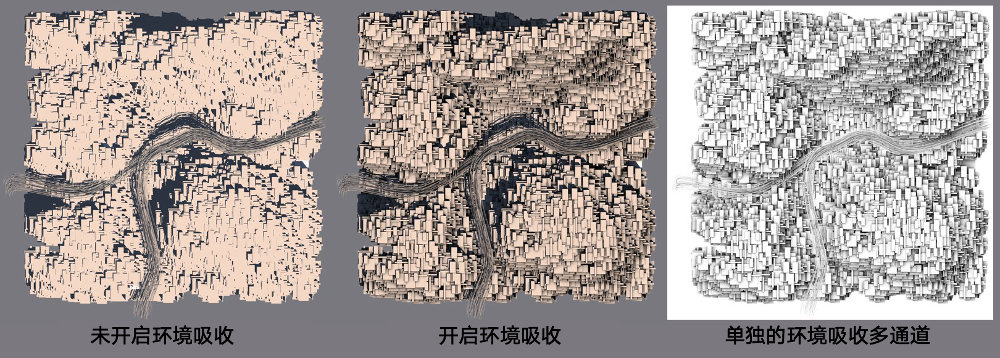

Function available in CINEMA 4D Prime, Visualize, Broadcast, Studio & BodyPaint 3D
 环境吸收着色器
环境吸收着色器
环境吸收着色器
可以在应用程序的两个地方找到环境吸收：
- 作为通道着色器（材质编辑器 | 纹理 | 效果）。
- 作为全局效果在整个场景中进行计算，并且可以缓存来缩短渲染时间。你可以在渲染设置 | “效果”按钮弹出菜单中找到它。
左图没有环境吸收，中图在漫射通道中使用了环境吸收。
环境吸收（AO）可以作为一个快速的全局光照替代方式，虽然它有一定的局限性。
环境吸收决定了每个独立表面点的曝光程度，并相应对其上色。假设你的场景中没有地面，并且周围被天空环绕，环境吸收着色器会决定每个可见区域可以看见天空的范围。
角落区域、孔洞、或与其他对象距离很近的对象可以看见的天空更少，因此会根据环境吸收设置相应地变暗。
如果将环境吸收着色器添加到漫射材质通道中，这些受影响的区域会变暗，就像启用了全局光照一样，而只需要很少的渲染时间。
在上图的右上图中你可以看到这种环境吸收渲染的结果，它显得更加生动和真实，就像没有环境吸收一样。
在上图的右下图中显示了环境吸收多通道，你可以确切地观察到被渲染的变暗区域。
环境吸收着色器还可以用在环境材质通道中（参见使用天空环境）。